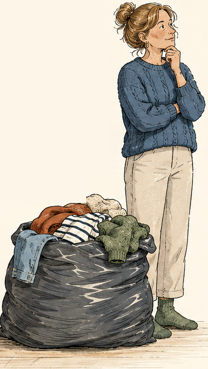

Hetta er Anna. Og hetta er posin við klæðum, sum hevur ligið til fortreð í eitt hálvt ár.

Í posanum eru klæði, sum ikki passa longur. Summi eru slitin. Onnur eru bara ikki „hon“ longur.
Anna vil fegin rudda út. Hon vil eisini fegin gera tað rætta.
Men hon veit ikki, hvat kann latast inn, og hvar hon skal fara við tí, ella um ein lítil posi yvirhøvur ger nakran mun.
Og so stendur hon har.
Tað sum kennist sum ein langur vegur, er í veruleikanum bara trý stig. Og ein posi ger ein mun, tí klæði eru ikki rusk.
Reint og turt tekstil – klæði, skógvar, klútar og lakan. Tað má gjarna vera slitið.
Lat posan í eina innsavningarbingju, ella lat hann inn á sorteringarstøðini.
Tað, sum kann brúkast, fer víðari. Tað, sum ikki kann, verður til nýtt tilfar.
Klæði, sum ikki passa longur, kunnu fáa nýtt lív hjá øðrum. Klæði, sum eru slitin, kunnu verða til nýtt tilfar. Bert tað, sum onki kann nýtast til, hoyrir heima í ruskspannini.
Finn nærmasta innsavningarstað